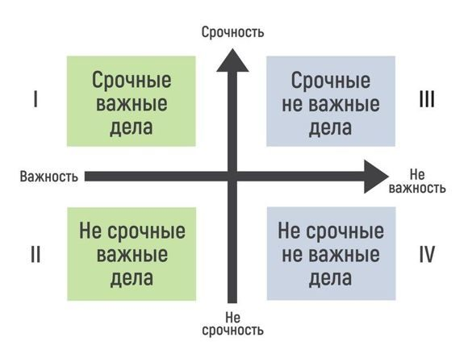

Наверное, это самая известная на сегодняшний день концепция тайм-менеджмента, которая позволяет выделять приоритеты. Данная методика, создание которой приписывают американскому генералу Дуайту Эйзенхауэру, позволяет рассортировать дела одновременно и по их срочности, и по их важности. Все понимают, что в один промежуток времени можно выполнить только ограниченное количество задач. Иногда без ущерба для работы только одну. И каждый раз нам приходится решать, какую же именно? В соответствии с так называемой матрицей Эйзенхауэра необходимо отнести каждое дело к одному из четырех типов, обозначенных на схеме.
Важность дела определяется тем, насколько результат его выполнения влияет на вас. А срочность – одновременно двумя факторами: во-первых, насколько быстро надо выполнить это дело, во-вторых, привязано ли выполнение данного дела к конкретной дате и конкретному времени. Именно важность и срочность, рассматриваемые вместе, влияют на расстановку приоритетов.
Рассмотрим подробнее, какие дела можно отнести к каждому их четырех типов.
Тип I: «важное и срочное».
Это дела, несвоевременное выполнение которых приведет к значительному ущербу для ваc. Определенная доля таких дел неизбежно будет присутствовать в жизни каждого человека. Также это могут быть проекты с «горящим» сроком выполнения, неотложка. Например, посетить врача из-за проблем со здоровьем, сдать в журнал статью к жесткому сроку или оформить отчет по итогам исследования.
Тип II: «важное, но не срочное».
Это дела, которые ориентированы на будущее: обучение, совершенствование оборудования, восстановление здоровья и работоспособности. Дела, ведущие к вашей стратегической цели. Также это профилактика проблем – поддерживать себя в хорошей физической форме. У этих дел есть интересная особенность – если ими долго пренебрегать, то они переходят в разряд Важные — Срочные. Ведь если хотя бы раз в год не появляться у стоматолога, то рано или поздно срочный визит к нему станет неизбежен.
Тип III: «не важное, но срочное».
Многие из этих дел на самом деле не приносят большой пользы в жизни. Мы делаем их только потому, что они на нас свалились (продолжительный телефонный разговор или изучение пришедшей по почте рекламы), или в силу привычки (посещение выставок, на которых уже нет ничего нового). Как раз та самая каждодневная рутина, которая отнимает у нас уйму времени и сил.
Тип IV: «не важное и не срочное».
Это всевозможные способы «убивания времени»: злоупотребление спиртным, «легким чтением», просмотром кинфоильмов и т. д. Часто мы прибегаем к этому, когда у нас не остается сил для продуктивной работы Поскольку вы стремитесь к успеху, вы прежде всего стараетесь выполнить дела, определенные вами как «важные» – сначала «срочные» (тип I), а затем «несрочные» (тип II). Оставшееся время можно уделить делам «срочным, но не важным» (тип III).
Когда вы только начинаете пользоваться предложенной системой для расстановки приоритетов, скорее всего, вы захотите отнести многие из этих дел к «важным». Однако, приобретая опыт, вы станете более точно оценивать важность того или иного дела. Чтобы научиться пользоваться системой определения приоритетов, понадобится определенное время.